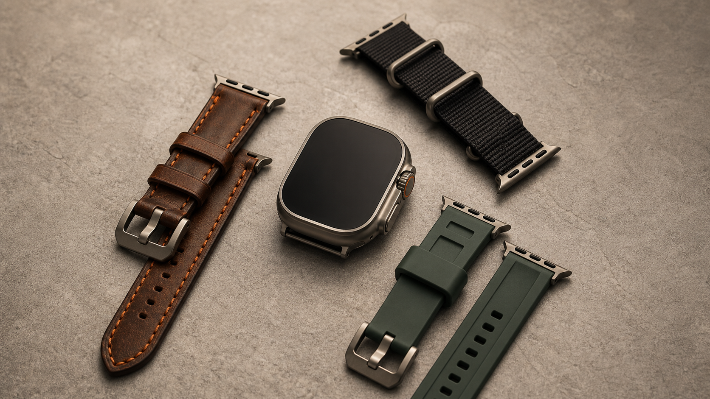

Vegetable-tanned cognac leather, charcoal or orange hand stitching, brushed titanium-color hardware. Personalize the inside, not the face.
Send the brief →Buying research · Aug 2026
Make the Ultra
your own.
A practical shortlist of makers that offer custom or made-to-order Apple Watch Ultra bands, plus three style directions to commission.

Concept samples, generated for this guide — not seller product photography.
Three good briefs
Black sailcloth or ballistic nylon, tonal stitch, titanium-color buckle, one orange accent. Confirm sweat resistance and connector material.
Send the brief →Forest-green FKM rubber, bead-blasted titanium-color hardware, orange keeper. The practical pick for water and training.
Send the brief →Where to commission
HAN LeatherButtero leather; color, stitch, size and name/logo options. Offers laser engraving or heat embossing. Listed from $70.Best gift option
TRIM LeatherMade-to-order vegetable-tanned leather; custom sizing on request and initials included. Its listing explicitly covers the 49 mm Ultra.Best value
O.R.I.S. HandmadeDesign a made-to-order leather strap by choosing leather, color, and hardware.Most configurable
Aevus DesignsHandmade luxury leather bands with a custom-order route—good for a conversation-led bespoke ask.Bespoke route
Rockstar LeatherworksDesign-your-own leather cuff and smart-watch-band options for a statement silhouette.Statement style
Edelband AtelierIndividual configuration by contact form while its custom configurator is being prepared.European atelier
Copy / paste commission brief
I have a 49 mm Apple Watch Ultra. I’d like a custom band in [material/color], wrist circumference [mm], with [buckle/hardware finish] and [stitch color]. The intended use is [daily / office / travel / exercise]. Please confirm 49 mm Ultra connector compatibility, finished length, lead time, shipping to [country], and whether you can add [initials / engraving]. I prefer [orange accent / no contrast].Before you order
- State the exact 49 mm Ultra case.
- Give a snug wrist measurement in millimeters.
- Specify titanium/silver, black, or polished hardware.
- Keep leather away from water-heavy use.
- Ask about connector quality and remake terms.
- Confirm personalization and return policy.
- Include tax, duty, and shipping in your budget.
- Check the maker’s current lead time.